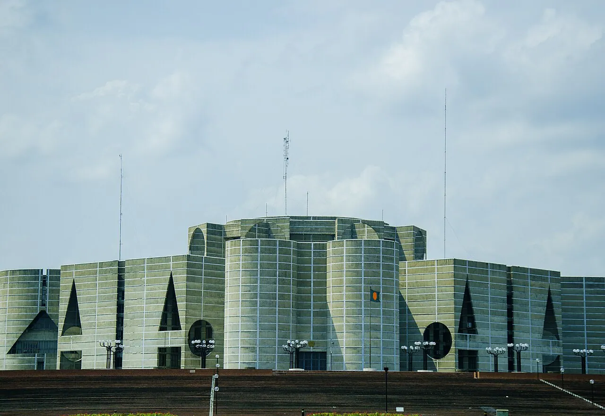
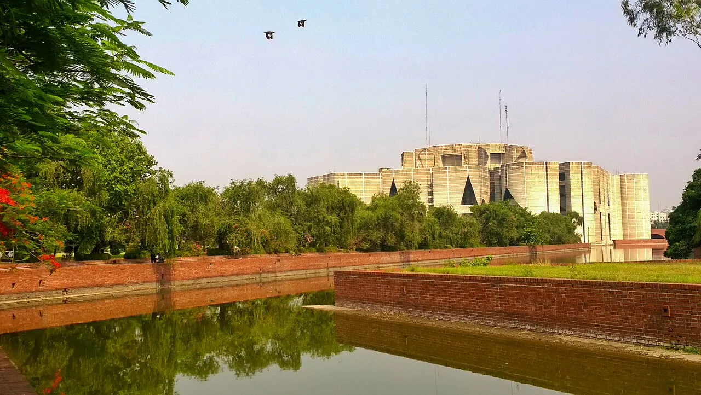

1/8 · Exterior · Jatiyo Sangsad Bhaban , BangladeshPhoto: Saiful Aopu & Nahid Sultan · CC BY-SA 3.0 · source2/8 · Exterior · Jatiyo Sangsad Bhaban , BangladeshPhoto: Nahid Sultan & Saiful Aopu · CC BY-SA 3.0 · source

3/8 · Exterior · Jatiyo Sangsad Bhaban , BangladeshPhoto: Nahid Sultan & Saiful Aopu · CC BY-SA 3.0 · source4/8 · Exterior · Jatiyo Sangsad Bhaban , BangladeshPhoto: Nahid Sultan & Saiful Aopu · CC BY-SA 3.0 · source

5/8 · ExteriorPhoto: Kazal1968 · CC BY-SA 4.0 · source6/8 · Exterior · National Parliament of Bangladesh is located in Agargaon,DhakaPhoto: Frameofashik · CC BY-SA 4.0 · source7/8 · ContextPhoto: Pinu Rahman · CC BY-SA 4.0 · source8/8 · ContextPhoto: Ali Morshed noton · CC BY-SA 4.0 · source
The Jatiya Sangsad (JS, lit. 'National Parliament'), constitutionally the House of the Nation and commonly the Sangsad, is the unicameral legislative body of Bangladesh.
The parliament is housed in the Jatiya Sangsad Bhaban (lit. 'National Parliament Building'), located at Sher-e-Bangla Nagar in the Bangladeshi capital of Dhaka. Designed by the American architect Louis Kahn, the building is one of the largest legislative complexes in the world, comprising 200 acres (81 ha). Louis Kahn designed the entire Jatiya Sangsad complex, which includes lawns, lake and residences for the MPs. The main building, which is at the centre of the complex, is divided into three parts – the Main Plaza, South Plaza and Presidential Plaza.
The origin of the Jatiya Sangsad lies in the Constituent Assembly of Bangladesh (1972–73), which was the first parliament of Bangladesh responsible for the promulgation of the Constitution of Bangladesh. Since 1981, Jatiya Sangsad Bhaban, situated in Sher-e-Bangla Nagar, Dhaka, has been hosting the sessions of the Jatiya Sangsad.


.jpg){kind=link}
.jpg){kind=link}
.jpg){kind=link}
.jpg){kind=link}